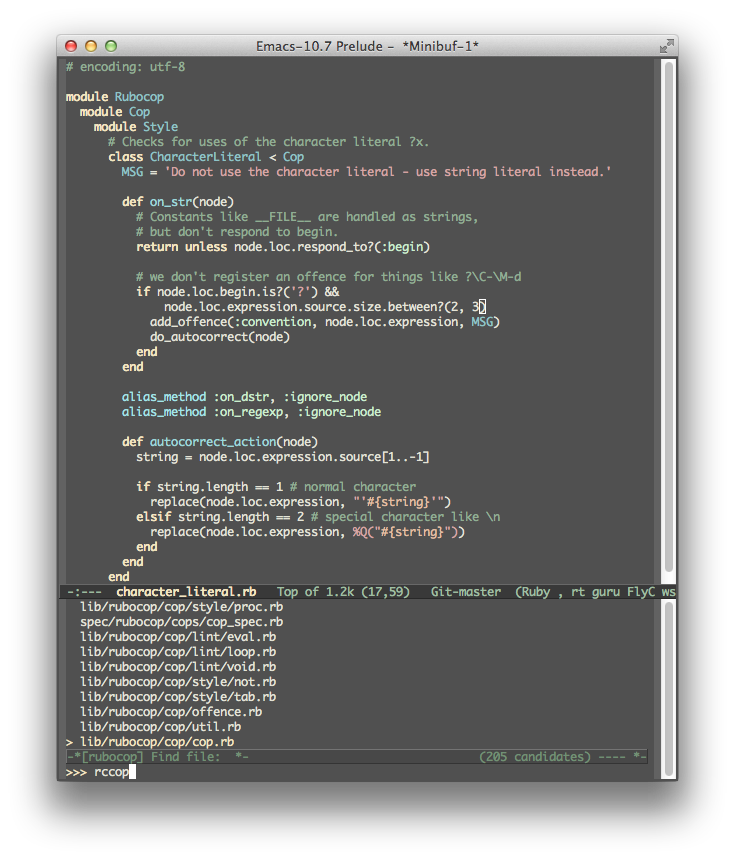
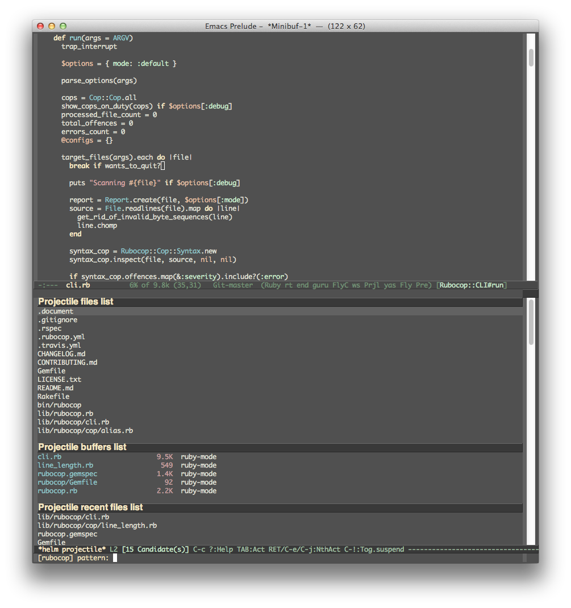
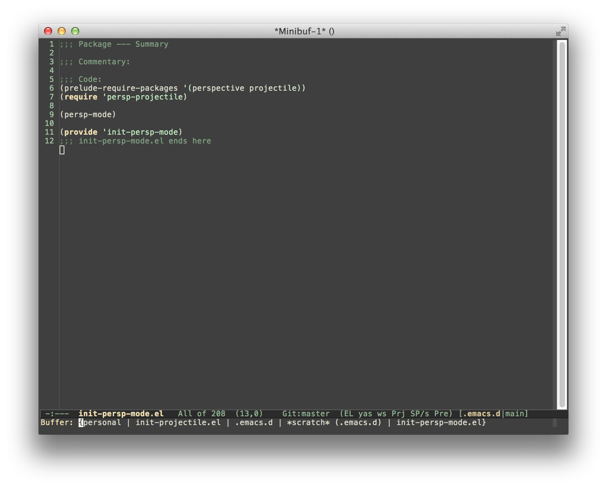
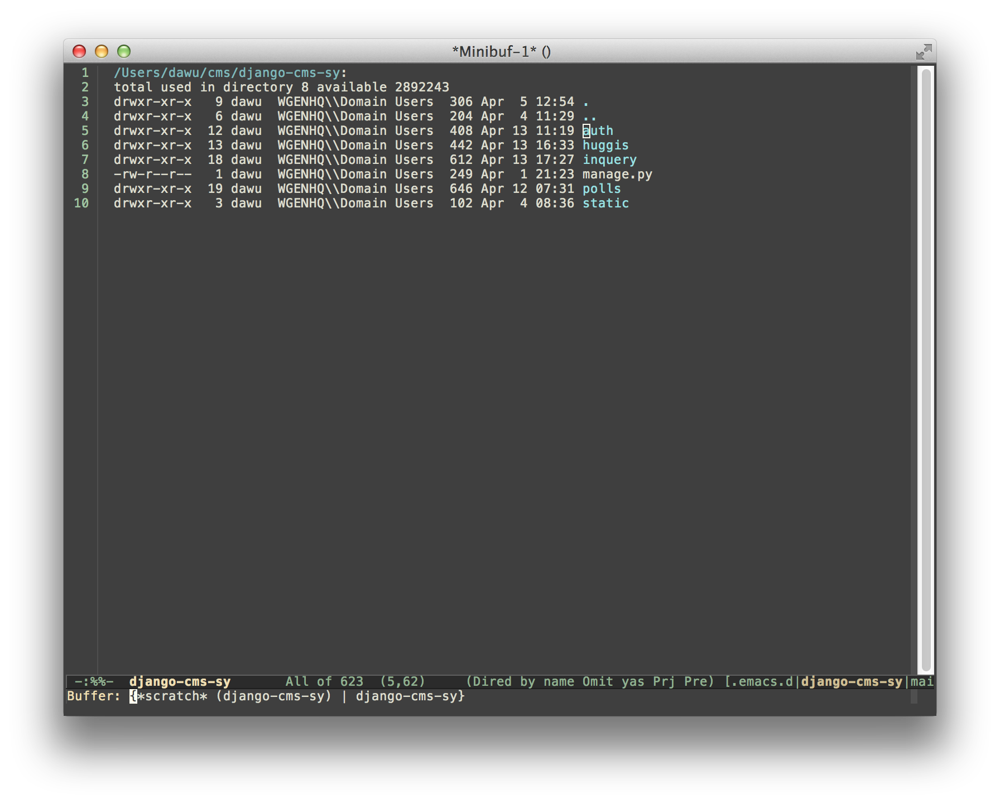

Synopsis

Projectile is a project interaction library for Emacs. Its goal is to
provide a nice set of features operating on a project level without
introducing external dependencies(when feasible). For instance -
finding project files has a portable implementation written in pure
Emacs Lisp without the use of GNU find (but for performance sake an
indexing mechanism backed by external commands exists as well).
Projectile tries to be practical - portability is great, but if some external tools could speed up some task substantially and the tools are available, Projectile will leverage them.
This library provides easy project management and navigation. The
concept of a project is pretty basic - just a folder containing
special file. Currently git, mercurial, darcs and bazaar repos
are considered projects by default. So are lein, maven, sbt,
scons, rebar and bundler projects. If you want to mark a folder
manually as a project just create an empty .projectile file in
it. Some of Projectile's features:
- jump to a file in project
- jump to files at point in project
- jump to a directory in project
- jump to a file in a directory
- jump to a project buffer
- jump to a test in project
- toggle between files with same names but different extensions (e.g.
.h<->.c/.cpp,Gemfile<->Gemfile.lock) - toggle between code and its test
- jump to recently visited files in the project
- switch between projects you have worked on
- kill all project buffers
- replace in project
- multi-occur in project buffers
- grep in project
- regenerate project etags or gtags (requires ggtags).
- visit project in dired
- run make in a project with a single key chord
Here's a glimpse of Projectile in action:

You can support my work on Projectile and all my other projects via gratipay.

Installation
The recommended way to install Projectile is via package.el.
package.el
MELPA
You can install a snapshot version of Projectile from the MELPA repository. The version of Projectile there will always be up-to-date, but it might be unstable (albeit rarely).
MELPA Stable
You can install the last stable version of Projectile from the MELPA Stable repository.
el-get
Projectile is also available for installation from the el-get package manager.
Emacs Prelude
Projectile is naturally part of the Emacs Prelude. If you're a Prelude user - Projectile is already properly configured and ready for action.
Usage
Basic setup
You can enable Projectile globally like this:
(projectile-global-mode)To enable Projectile only in select modes:
(add-hook 'ruby-mode-hook 'projectile-mode)If you're going to use the default ido completion it's
extremely highly recommended that you install the optional
flx-ido package, which provides a much
more powerful alternative to ido's built-in flex matching.
Indexing method
Projectile has two modes of operation - one is portable and is
implemented in Emacs Lisp(therefore it's native to Emacs and is known
as the native indexing method) and the other relies on external
commands like find, git, etc to obtain the list of files in a
project.
Since the native indexing mode is much slower, by default the second method is used on all operating systems except Windows. To force the use of native indexing in operating systems other than Windows:
(setq projectile-indexing-method 'native)To force the use of external indexing in Windows:
(setq projectile-indexing-method 'alien)This can speed up Projectile in Windows significantly. The disadvantage of this method is that it's not well supported on Windows systems. If there's problem, you can always use native indexing mode.
Caching
Project files
Since indexing a big project is not exactly quick (especially in Emacs Lisp), Projectile supports caching of the project's files. The caching is enabled by default whenever native indexing is enabled.
To enable caching unconditionally use this snippet of code:
(setq projectile-enable-caching t)At this point you can try out a Projectile command such as C-c p f (M-x projectile-find-file RET).
Running C-u C-c p f will invalidate the cache prior to prompting you for a file to jump to.
Pressing C-c p z will add the currently visited file to the cache for current project. Generally files created outside Emacs will be added to the cache automatically the first time you open them.
The project cache is persistent and will be preserved during Emacs restarts.
You can purge an individual file from the cache with M-x projectile-purge-file-from-cache or an
entire directory with M-x projectile-purge-dir-from-cache.
File exists cache
Projectile does many file existence checks since that is how it identifies a project root. Normally this is fine, however in some situations the file system speed is much slower than usual and can make emacs "freeze" for extended periods of time when opening files and browsing directories.
The most common example would be interfacing with remote systems using TRAMP/ssh. By default all remote file existence checks are cached
To disable remote file exists cache that use this snippet of code:
(setq projectile-file-exists-remote-cache-expire nil)To change the remote file exists cache expire to 10 minutes use this snippet of code:
(setq projectile-file-exists-remote-cache-expire (* 10 60))You can also enable the cache for local file systems, that is normally not needed but possible:
(setq projectile-file-exists-local-cache-expire (* 5 60))Using Projectile everywhere
If you want Projectile to be usable in every directory (even without the presence of project file):
(setq projectile-require-project-root nil)This might not be a great idea if you start Projectile in your home folder for instance. :-)
Switching projects
When running projectile-switch-project (C-c p p) Projectile invokes
the command specified in projectile-switch-project-action (by default it is
projectile-find-file).
Depending on your personal workflow and habits, you
may prefer to alter the value of projectile-switch-project-action:
projectile-find-file
This is the default. With this setting, once you have selected your
project via Projectile's completion system (see below), you will
remain in the completion system to select a file to visit. projectile-find-file
is capable of retrieving files in all sub-projects under the project root,
such as Git submodules. Currently, only Git is supported. Support for other VCS
will be added in the future.
projectile-find-file-in-known-projects
Similar to projectile-find-file but lists all files in all known projects. Since
the total number of files could be huge, it is beneficial to enable caching for subsequent
usages.
projectile-find-file-dwim
If point is on a filepath, Projectile first tries to search for that file in project:
If it finds just a file, it switches to that file instantly. This works even if the filename is incomplete, but there's only a single file in the current project that matches the filename at point. For example, if there's only a single file named "projectile/projectile.el" but the current filename is "projectile/proj" (incomplete), projectile-find-file still switches to "projectile/projectile.el" immediately because this is the only filename that matches.
If it finds a list of files, the list is displayed for selecting. A list of files is displayed when a filename appears more than one in the project or the filename at point is a prefix of more than two files in a project. For example, if `projectile-find-file' is executed on a filepath like "projectile/", it lists the content of that directory. If it is executed on a partial filename like "projectile/a", a list of files with character 'a' in that directory is presented.
If it finds nothing, display a list of all files in project for selecting.
projectile-dired
(setq projectile-switch-project-action 'projectile-dired)With this setting, once you have selected your project, the top-level directory of the project is immediately opened for you in a dired buffer.
projectile-find-dir
(setq projectile-switch-project-action 'projectile-find-dir)With this setting, once you have selected your project, you will remain in Projectile's completion system to select a sub-directory of your project, and then that sub-directory is opened for you in a dired buffer. If you use this setting, then you will probably also want to set
(setq projectile-find-dir-includes-top-level t)in order to allow for the occasions where you want to select the top-level directory.
Completion Options
Ido
By default Projectile uses ido as its completion system. ido is
extremely popular and it is built into Emacs.
As already noted above if you're going to use the ido completion it's
extremely highly recommended that you install the optional
flx-ido package, which provides a much
more powerful alternative to ido's built-in flex matching.
Grizzl
Another completion option is grizzl:
(setq projectile-completion-system 'grizzl)
grizzl's advantage is that it provides good fuzzy completion
(compared to ido's less than stellar built-in flex matching, but inferior to ido-flx).
Basic (Emacs's default)
If you don't like ido and grizzl you can use regular completion:
(setq projectile-completion-system 'default)You might want to combine default completion with icomplete-mode for optimum results.
Custom Completion Function
You can also set projectile-completion-system to a function:
(setq projectile-completion-system 'my-custom-completion-fn)
(setq projectile-completion-system
(lambda (prompt choices)
;; ...
))An example of a custom completion function is this one, which only show the file name (not including path) and if the file selected is not unique, another completion with names relative to project root appears.
Regenerate tags
To be able to regenerate a project's tags via projectile-tags-command, you
should install and add to the PATH
Exuberant Ctags instead of a plain ctags, which
ships with Emacs distribution.
Interactive Commands
Here's a list of the interactive Emacs Lisp functions, provided by Projectile:
| Keybinding | Description |
|---|---|
| C-c p f | Display a list of all files in the project. With a prefix argument it will clear the cache first. |
| C-c p F | Display a list of all files in all known projects. |
| C-c p g | Display a list of all files at point in the project. With a prefix argument it will clear the cache first. |
| C-c p 4 f | Jump to a project's file using completion and show it in another window. |
| C-c p 4 g | Jump to a project's file based on context at point and show it in another window. |
| C-c p d | Display a list of all directories in the project. With a prefix argument it will clear the cache first. |
| C-c p 4 d | Switch to a project directory and show it in another window. |
| C-c p 4 a | Switch between files with the same name but different extensions in other window. |
| C-c p T | Display a list of all test files(specs, features, etc) in the project. |
| C-c p l | Display a list of all files in a directory (that's not necessarily a project) |
| C-c p s g | Run grep on the files in the project. |
| M-- C-c p s g | Run grep on projectile-grep-default-files in the project. |
| C-c p v | Run vc-dir on the root directory of the project. |
| C-c p b | Display a list of all project buffers currently open. |
| C-c p 4 b | Switch to a project buffer and show it in another window. |
| C-c p 4 C-o | Display a project buffer in another window without selecting it. |
| C-c p a | Switch between files with the same name but different extensions. |
| C-c p o | Runs multi-occur on all project buffers currently open. |
| C-c p r | Runs interactive query-replace on all files in the projects. |
| C-c p i | Invalidates the project cache (if existing). |
| C-c p R | Regenerates the projects TAGS file. |
| C-c p j | Find tag in project's TAGS file. |
| C-c p k | Kills all project buffers. |
| C-c p D | Opens the root of the project in dired. |
| C-c p e | Shows a list of recently visited project files. |
| C-c p s s | Runs ag on the project. Requires the presence of ag.el. |
| C-c p ! | Runs shell-command in the root directory of the project. |
| C-c p & | Runs async-shell-command in the root directory of the project. |
| C-c p c | Runs a standard compilation command for your type of project. |
| C-c p P | Runs a standard test command for your type of project. |
| C-c p t | Toggle between an implementation file and its test file. |
| C-c p 4 t | Jump to implementation or test file in other window. |
| C-c p z | Adds the currently visited file to the cache. |
| C-c p p | Display a list of known projects you can switch to. |
| C-c p S | Save all project buffers. |
| C-c p m | Run the commander (an interface to run commands with a single key). |
| C-c p ESC | Switch to the most recently selected Projectile buffer. |
If you ever forget any of Projectile's keybindings just do a:
C-c p C-h
You can change the default keymap prefix C-c p like this:
(setq projectile-keymap-prefix (kbd "C-c C-p"))It is also possible to add additional commands to
projectile-command-map referenced by the prefix key in
projectile-mode-map. You can even add an alternative prefix for all
commands. Here's an example that adds super-p as the extra prefix:
(define-key some-keymap (kbd "s-p") 'projectile-command-map)For some common commands you might want to take a little shortcut and
leverage the fairly unused Super key (by default Command on Mac
keyboards and Windows on Win keyboards). Here's something you can
add to your Emacs config:
(define-key projectile-mode-map [?\s-d] 'projectile-find-dir)
(define-key projectile-mode-map [?\s-p] 'projectile-switch-project)
(define-key projectile-mode-map [?\s-f] 'projectile-find-file)
(define-key projectile-mode-map [?\s-g] 'projectile-grep)Note that the Super keybindings are not usable in Windows. Emacs
Prelude already adds those extra keybindings.
Ignoring files
If you'd like to instruct Projectile to ignore certain files in a
project, when indexing it you can do so in the .projectile file by
adding each path to ignore, where the paths all are relative to the
root directory and start with a slash. Everything ignored should be
preceded with a - sign. Alternatively, not having any prefix at all
also means to ignore the directory or file pattern that follows.
Here's an example for a typical Rails application:
-/log
-/tmp
-/vendor
-/public/uploads
This would ignore the folders only at the root of the project. Projectile also supports relative pathname ignores:
-tmp
-*.rb
-*.yml
-models
You can also ignore everything except certain subdirectories. This is useful when selecting the directories to keep is easier than selecting the directories to ignore, although you can do both. To select directories to keep, that means everything else will be ignored.
Example:
+/src/foo
+/tests/foo
Keep in mind that you can only include subdirectories, not file patterns.
If both directories to keep and ignore are specified, the directories to keep first apply, restricting what files are considered. The paths and patterns to ignore are then applied to that set.
Customizing project root files
You can set the values of projectile-project-root-files,
projectile-project-root-files-top-down-recurring,
projectile-project-root-files-bottom-up and
projectile-project-root-files-functions to customize how project roots are
identified.
To customize project root files settings:
M-x customize-group RET projectile RET
Storing project settings
From project to project some things may differ even in same language -
different coding styles, separate auto-completion sources, etc. If
you need to set some variables according to selected project, you can
use standard Emacs feature called
Per-Directory Local Variables. To
use it you must create file named .dir-locals.el inside project
directory. This file must contain something like this:
((nil . ((secret-ftp-password . "secret")
(compile-command . "make target-x")
(eval . (progn
(defun my-project-specific-function ()
;; ...
))))
(c-mode . (c-file-style . "BSD")))
The top-level alist member referenced with the key nil applies to the
entire project. A key with the name eval will evaluate its
arguments. In the example above, this is used to create a function. It
could also be used to e.g. add such a function to a key map.
Here are a few examples of how to use this feature with Projectile.
Configuring Projectile's Behavior
Projectile offers many customizable variables (via defcustom) that
allows us to customize its behavior. Because of how dir-locals.el
works, it can be used to set these customizations on a per-project basis.
You could enable caching for a project in this way:
((nil . ((projectile-enable-caching . t))))
If one of your projects had a file that you wanted Projectile to ignore, you would customize Projectile by:
((nil . ((projectile-globally-ignored-files . '("MyBinaryFile")))))
If you wanted to wrap the git command that Projectile uses to find list the files in you repository, you could do:
((nil . ((projectile-git-command . "/path/to/other/git ls-files -zco --exclude-standard"))))
Configure Project's Compilation Command
Overriding pieces of Projectile might require some hacking on your part -- reading the source, advising functions, etc.
For example, by reading Projectile's source, you could discover that a project's compilation command can be specified with this code:
((nil . ((eval . (progn
;; require projectile; the following code will fail
;; without it.
(require 'projectile)
;; provide a fake "recent" compilation cmd
;; which will be returned by the function
;; `projectile-compilation-command`
(puthash (projectile-project-root)
"./command-to-compile-your-project.sh"
projectile-compilation-cmd-map))))))
Configure Project's Test Command
Altering the test command works in the same way as altering the compilation command. Comments are left out in this example for brevity and clarity:
((nil . ((eval . (progn
(require 'projectile)
(puthash (projectile-project-root)
"./test-project.sh"
projectile-test-cmd-map))))))
Helm Integration
Projectile can be integrated with Helm via
helm-source-projectile-projects, helm-source-projectile-files-list,
helm-source-projectile-buffers-list and helm-source-projectile-recentf-list
sources (available in helm-projectile.el). There is also an example function
for calling Helm with the Projectile file source. You can call it like this:
M-x helm-projectile
or even better - invoke the key binding C-c p h.
For those who prefer helm to ido, the command helm-projectile-switch-project
can be used to replace projectile-switch-project to switch project. Please
note that this is different from simply setting projectile-completion-system
to helm, which just enables projectile to use the Helm completion to complete
a project name. The benefit of using helm-projectile-switch-project is that on
any selected project we can fire many actions, not limited to just the "switch
to project" action, as in the case of using helm completion by setting
projectile-completion-system to helm. Currently, there are five actions:
"Switch to project", "Open Dired in project's directory", "Open project root in
vc-dir or magit", "Switch to Eshell" and "Grep project files". We will add more
and more actions in the future.
helm-projectile is capable of opening multiple files by marking the files with
C-SPC or mark all files with M-a. Then, press RET,
all the selected files will be opened.
Note that the helm grep is different from projectile-grep because the helm
grep is incremental. To use it, select your projects (select multiple projects
by pressing C-SPC), press "C-s" (or "C-u C-s" for recursive grep), and type your
regexp. As you type the regexp in the mini buffer, the live grep results are
displayed incrementally.
helm-projectile also provides Helm versions of common Projectile commands. Currently,
these are the supported commands:
helm-projectile-switch-projecthelm-projectile-find-filehelm-projectile-find-file-in-known-projectshelm-projectile-find-file-dwimhelm-projectile-find-dirhelm-projectile-recentfhelm-projectile-switch-to-buffer-
helm-projectile-grep(can be used for both grep or ack) helm-projectile-ag- Replace Helm equivalent commands in
projectile-commander - A virtual directory manager that is unique to Helm Projectile
Why should you use these commands compared with the normal Projectile commands, even
if the normal commands use helm as projectile-completion-system? The answer is,
Helm specific commands give more useful features. For example, helm-projectile-switch-project
allows opening a project in Dired, Magit or Eshell. helm-projectile-find-file reuses actions in
helm-find-files (which is plenty) and able to open multiple files. Another reason is that in a large
source tree, helm-projectile could be slow because it has to open all available sources.
If you want to use these commands, you have to activate it to replace the normal Projectile commands:
;; (setq helm-projectile-fuzzy-match nil)
(require 'helm-projectile)
(helm-projectile-on)If you already activate helm-projectile key bindings and you don't like it, you can turn it off
and use the normal Projectile bindings with command helm-projectile-off. Similarly, if you want to
disable fuzzy matching in Helm Projectile (it is enabled by default), you must set helm-projectile-fuzzy-match
to nil before loading helm-projectile.
To fully learn Helm Projectile and see what it is capable of, you should refer to this guide: Exploring large projects with Projectile and Helm Projectile.
Obviously you need to have Helm installed for this to work :-)

Work with Perspective Mode
Perspective is a minor mode that provides the ability to manage different workspaces. If you need to open many projects at the same time, perspective can help you keep each project related buffers and windows setting separate from other projects, similar to multiple spaces on MacOS, which allows you to focus on the files of the current active project.
A picture says a thousand words. See below screenshot to get a concrete idea.
Only current project related files showing in minibuffer when I call
ido-switch-buffer, and an indicator in mode line tells me which
project that I'm in.

When I switch to a different project, I get a clean 'perspective'.

To integrate perspective with Projectile, first of all, you need to install perspective. You can install it by:
M-x package-install
Then type perspective in the minibuffer, as below:
Install package: perspective
Secondly, make sure persp-projectile.el is in your Emacs load path. Then require it in your init file.
(persp-mode)
(require 'persp-projectile)You're ready to go! Try the interactive command
projectile-persp-switch-project, or you may also bind it to some
handy keybinding.
(define-key projectile-mode-map (kbd "s-s") 'projectile-persp-switch-project)Idle Timer
Projectile can be configured to run the hook
projectile-idle-timer-hook every time Emacs is in a project and has
been idle for projectile-idle-timer-seconds seconds (default is 30
seconds). To enable this feature, run:
M-x customize-group RET projectile RET
and set projectile-enable-idle-timer to non-nil. By default,
projectile-idle-timer-hook runs projectile-regenerate-tags. Add
additional functions to the hook using add-hook:
(add-hook 'projectile-idle-timer-hook 'my-projectile-idle-timer-function)Mode line indicator
By default the minor mode indicator of Projectile appears in the form
" Projectile[ProjectName]". This is configurable via the custom variable
projectile-mode-line, which expects a sexp like
'(:eval (format " Proj[%s]" (projectile-project-name)))
Caveats
- Traversing the project directory programmatically (instead of using something like GNU find) is not very fast. On the other hand - it's portable. Unlike find-file-in-project, projectile's jump-to-file will work on any OS.
- Some operations like search(grep) depend (presently) on external
utilities such as
find.
Would you like to know more?
Check out the Projectile's project page.
Known issues
Check out the project's issue list a list of unresolved issues. By the way - feel free to fix any of them and sent me a pull request. :-)
Contributors
Here's a list of all the people who have contributed to the development of Projectile.
Contribution
All contributions are welcome, as long as they don't break anything :-) To make sure you didn't introduce any regressions it's a good idea to run the tests first.
Install cask if you haven't already, then:
$ cd /path/to/projectile
$ caskRun all tests with:
$ make testYou can also support my work on Projectile and all my other projects via gratipay.

Changelog
A fairly extensive changelog is available here.
Freenode
If you're into IRC you can visit the #projectile channel on Freenode.
Bugs & Improvements
Bug reports and suggestions for improvements are always welcome. GitHub pull requests are even better! :-)
Together we can create the ultimate project management tool for Emacs.
Cheers,
Bozhidar